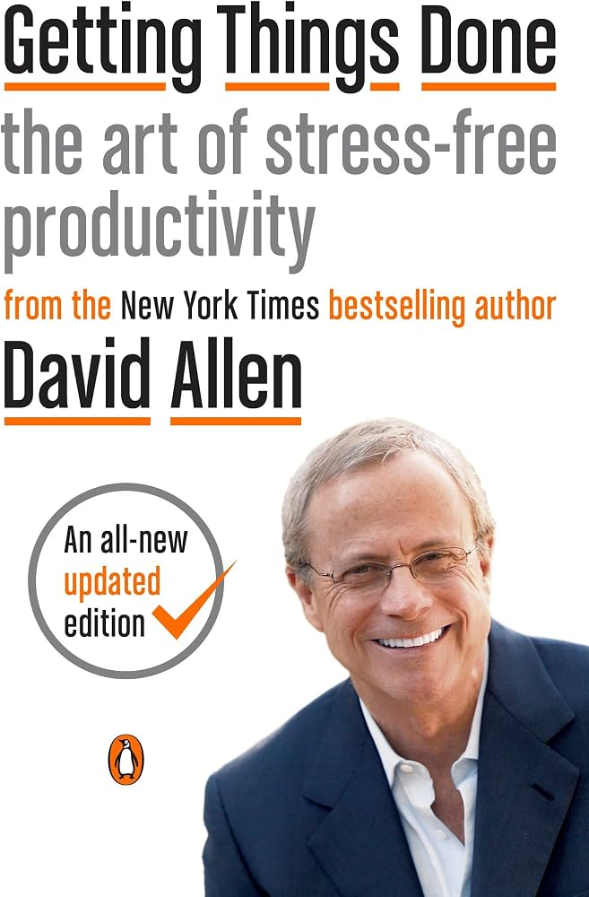

Getting Things Done begins with a diagnosis familiar to almost anyone with a demanding job: it isn't the volume of work that produces stress, it's incomplete commitments that live only in your mind. David Allen calls these "open loops" — anything you've told yourself you should do, need to decide, or haven't finished — and argues that every one of them consumes a small, constant sliver of attention whether or not you're actually working on it, simply because your mind keeps trying to remind you at inconvenient moments.
His solution is not a better to-do list but a complete method: a five-step workflow (Capture, Clarify, Organize, Reflect, Engage) that moves everything competing for your attention out of your head and into an external system you fully trust, reviewed on a reliable cycle. Once that trust is established, Allen argues you reach a state he borrows from martial arts — "mind like water" — able to respond to whatever comes up with exactly the right amount of energy, neither underreacting nor overreacting, because nothing is being silently tracked in the background.
The book is deliberately practical rather than philosophical: it spends far more time on concrete mechanics — how to process an inbox to zero, how to define a "next action," how to build a tickler file, how to run a Weekly Review — than on motivation or theory. Its underlying claim is that the psychology of stress-free productivity is downstream of a small number of concrete habits, and that almost anyone can install those habits regardless of role, industry, or personality type.
Every piece of "stuff" competing for your attention — email, a hallway request, a stray idea — moves through the same five steps.
Reviewed at decreasing frequency the higher the altitude — this is what keeps day-to-day task management connected to what actually matters.
A dedicated weekly block to get "in" to empty, review every active list, update projects, and re-check the calendar and Waiting For items. Skipping it is the single most common reason the system quietly decays.
Getting every stray thought, request, or commitment out of your head and into a trusted inbox the instant it appears — the foundational habit every other part of the method depends on.
Grouping actionable items by where or with what they can be done (@calls, @computer, @errands) rather than by project or priority alone — lets you scan only what's actually possible right now.
A holding place for things you might want to do eventually but aren't committed to now — reviewed during the Weekly Review so ideas aren't lost, but also aren't cluttering active lists.
A 43-folder system (31 days + 12 months) for resurfacing physical items and reminders on a specific future date — a low-tech way to defer something completely out of sight until it's actually relevant.
Your mind is for having ideas, not holding them.
You can do anything, but not everything.
There is no reason ever to have the same thought twice, unless you like having that thought.
Getting things done requires a change in behavior, and behavior change comes from new decisions and commitments, tested over time.
If the book has one idea worth carrying forward above all others, it's that stress comes from incomplete commitments, not workload itself. A hundred open loops tracked reliably in a trusted external system produce far less anxiety than ten open loops tracked only in your head — the number of things you're doing matters less than whether you trust that nothing is being silently forgotten.
This is what makes the Two-Minute Rule and Next-Action thinking so durable as tools — both attack the actual mechanism of overwhelm directly, rather than trying to manage its symptoms with willpower or motivation. Vague commitments create background anxiety; specific, externally tracked ones don't, regardless of how large the underlying project actually is.
What keeps this from being just a clever productivity hack is the Weekly Review: Allen is explicit that the entire psychological benefit depends on the system staying current. A brilliant system set up once and never reviewed again degrades into exactly the kind of untrustworthy pile the method was designed to eliminate — the relief isn't a one-time event, it's a maintained state.
Getting Things Done earns its status as the foundational text of modern personal productivity by doing something most books in the category still don't manage: it describes a complete, mechanically precise system rather than a loose collection of motivational tips. Every piece — Capture, Clarify, Organize, Reflect, Engage — has an explicit job, and the book is disciplined about insisting all five have to function together for the psychological payoff to actually appear.
Its greatest strength is durability through specificity. The Two-Minute Rule, the Next-Action discipline, and the Weekly Review remain in daily use across radically different work styles and technologies, more than two decades after the original edition — rare evidence that Allen correctly identified something about how attention actually works, rather than a trend tied to a particular era's tools.
The honest caveat is that the system asks for real upfront investment and ongoing discipline, and the book is candid that most people implement it imperfectly at first. Some sections feel dated even in the revised edition, and the Weekly Review — the habit the whole system depends on — is also the one most readers struggle to sustain without external accountability.
The practical recommendation: read the whole book once for the full architecture, then start with just two habits — ubiquitous capture and a genuine weekly review — before worrying about a perfect list structure. The real value isn't in agreeing intellectually that "you should write things down." It's in actually running the mind sweep, actually defining the next physical action for every open project, and actually protecting the Weekly Review long enough for the system to become trustworthy — which is exactly the discipline the entire book is built to install.